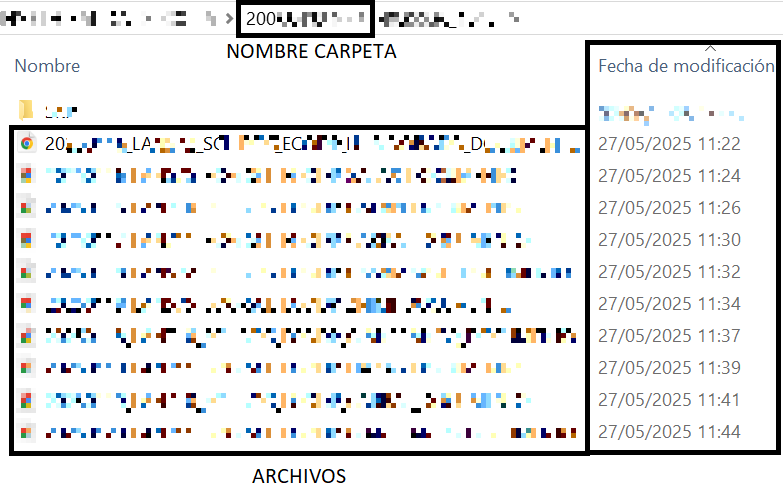

Generar archivo .add.WIP
El siguiente ejemplo de ejecución es en base a la imagen de la derecha
Los archivos PDF deben moverse a la carpeta 200XXXXXXX como se muestra en la imagen
Seleccionamos la carpeta donde acabamos de mover los archivos PDF cuyos nombres tienen el siguiente formato:
20XXXXXX_LXXXXX_SXX-BXX_EXXXXX_SXXXX_DXXXXXXXX.pdf
Click en Generar Archivo y el sistema generará automáticamente un archivo .add.WIP con los datos extraídos. El archivo se guardará automaticamente en la carpeta de Descargas de allí debemos moverlo a la carpeta deseada.
